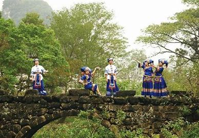

壮族霜降节是壮族典型的民俗活动，主要流行于广西壮族地区的天等、大新、德保、靖西、那坡等县，尤其以天等县的壮族霜降节最为典型，其节日影响范围远及云南和越南。
天等县辖13个乡镇，位于广西壮族自治区西南部，东接隆安、平果县，南邻大新县，西接靖西、德保县，北界田东县，西南部县界距中越边境最近处约9公里，县境土地总面积2159.25平方公里，居住着壮、瑶、苗等少数民族，人口总数44.7万人，其中壮族人口占98.83%。
壮族霜降节在每年农历霜降后的9天内举行，每年参加人数有数万人之多。壮族霜降节依托于壮族稻作文化，最初是壮族民众酬谢自然、庆祝丰收的一种形式，表达祈盼五谷丰登的良好愿望。
明代嘉靖年间，壮族霜降节又融入了纪念民族女英雄瓦氏夫人的内容，颂扬瓦氏夫人率领将士打击倭寇的英雄事迹，传授民族历史知识，宣扬保卫家园、谋求平安的民族精神。
清代，壮族霜降节进入鼎盛时期，不但百姓祭祀，州官也常身着官服率众顶礼拜祭，物资交流也更趋繁荣，壮族霜降节前，老人们便开始忙着准备物品，以便在霜降节时摆摊出卖。后来，各地商客也赶来在销售商品，甚至还有越南客商远道而来。此外还有山歌对唱（以歌传史、以歌交友、以歌传情）、戏剧演出、走亲访友等内容。
改革开放后，壮族霜降节逐渐恢复，除传统内容外，还增加了祈福长寿以及篮球、拔河比赛等活动。
在长期的传承过程中，壮族霜降节形成了独特的时空选择、历史悠久性与影响广泛性的有机结合、形式多样性与内涵丰富性的有机结合、民族记忆与文化认同的有机结合等特征。
壮族霜降节是壮族稻作文化传统的活态体现，更是民族记忆与文化认同的重要载体，蕴涵着壮族的文化基因和历史记忆，对于了解壮族历史、传承壮族文化、增强民族团结，促进壮族社会发展等都具有多元丰富的社会价值、文化价值、学术价值和现实价值。